Week 2: Regression modelling part 1
1 Introduction
Now that we are comfortable with visualising and manipulating data in R, we can now proceed onto modelling data. The key idea behind modelling data is to infer the relationship between an:
- outcome (or response) variable \(y\) and
- an explanatory (or predictor) variable \(x\), which can also be referred to as an independent variable or covariate.
Modelling can be used for two purposes:
Explanation: For describing the relationship between an outcome variable \(y\) and an explanatory variable x, and determining the potential significance of such relationships using quantifiable measures.
Prediction: for predicting the outcome variable \(y\) given information from one or more explanatory variables.
There are many different modelling techniques. However, we will begin with one of the easier to understand and commonly-used approaches, linear regression. In particular, we will start by looking at simple linear regression, where we only have one explanatory variable.
Note: Additional information and examples can be found in Chapter 6 of An Introduction to Statistical and Data Science via R.
2 Simple linear regression
For a response variable \(y\) and an explanatory variable \(x\), the data can be expressed as:
\[(y_i, x_i), ~~~~ i = 1,\ldots,n.\] That is, we have \(n\) observations of \(y\) and \(x\). A statistical model is a mathematical statement describing the variability in a random variable \(y\), which includes any relationship with the explanatory variable \(x\). The inclusion of random (unpredictable) components \(\epsilon\), makes the model statistical, rather than deterministic. A simple linear regression model involves, as the name suggests, fitting a linear regression line to the data. Hence, a simple linear regression model can be written as follows:
\[y_i = \alpha + \beta x_i + \epsilon_i, ~~~~ \epsilon_i \sim N(0, \sigma^2),\] where
- \(y_i\) is the \(i^{th}\) observation of the response variable;
- \(\alpha\) is the intercept of the regression line;
- \(\beta\) is the slope of the regression line;
- \(x_i\) is the \(i^{th}\) observation of the explanatory variable; and
- \(\epsilon_i\) is the \(i^{th}\) random component.
The random components, \(\epsilon_i\), are normally distributed with mean zero and constant variance \(\sigma^2\), such that we are essentially adding random white noise to the deterministic part of the model (\(\alpha + \beta x_i\)). Thus, the full probability model for \(y_i\) given \(x_i\) (\(y_i | x_i\)) can be written as
\[y_i | x_i \sim N(\alpha + \beta x_i, \sigma^2).\]
Hence, the mean comes from the deterministic part of the model, while the variance comes from the random part. We shall now look into fitting a simple linear regression model to some data.
3 Simple linear regression with one numerical explanatory variable
First, we need to load the following packages into R:
Student feedback in higher education is extremely important when it comes to the evaluation of teaching techniques, materials, and improvements in teaching methods and technologies. However, there have been studies into potential bias factors when feedback is provided, such as the physical appearance of the teacher; see Economics of Education Review for details. Here, we shall look at a study from student evaluations of \(n=463\) professors from The University of Texas at Austin. In particular, we will examine the evaluation scores of the instructors based purely on one numerical variable: their beauty score. Therefore, our simple linear regression model will consist of:
- the numerical outcome variable teaching score (\(y\)); and
- the numerical explanatory variable beauty score (\(x\)).
3.1 Exploratory data analysis
Before you ever do any statistical modelling of data, you should always perform an exploratory data analysis of the data. Performing an exploratory data analysis can give us an idea of the distribution of the data, and whether it contains any strange values, such as outliers or missing values. However, more importantly, it is used to inform which statistical model we should fit to the data. An exploratory data analysis may involve:
- Looking at the raw values of the data, either by looking at the spreadsheet directly, or using R.
- By computing various summary statistics, such as the five-number summary, means, and standard deviations.
- Plotting the data using various data visualisation techniques.
Let’s examine the data evals. We can look at the raw values from evals using the RStudio pop-up spreadsheet viewer using:
Code
View(evals)At the moment we are only really interested in the instructors teaching (score) and beauty (bty_avg) scores, and so we can look at a subset of the data as follows:
Code
evals.scores <- evals |>
select(score, bty_avg)The outcome variable score is a numerical average of the average teaching score based on students’ evaluations between 1 and 5. The explanatory variable bty_avg is the numerical variable of the average beauty score from a panel of six students’ scores between 1 and 10. As both variables are numerical, we can compute summary statistics for them using the skim function from the skimr package as follows:
Code
evals.scores |>
skim()| Name | evals.scores |
| Number of rows | 463 |
| Number of columns | 2 |
| _______________________ | |
| Column type frequency: | |
| numeric | 2 |
| ________________________ | |
| Group variables | None |
Variable type: numeric
| skim_variable | n_missing | complete_rate | mean | sd | p0 | p25 | p50 | p75 | p100 | hist |
|---|---|---|---|---|---|---|---|---|---|---|
| score | 0 | 1 | 4.17 | 0.54 | 2.30 | 3.80 | 4.30 | 4.6 | 5.00 | ▁▁▅▇▇ |
| bty_avg | 0 | 1 | 4.42 | 1.53 | 1.67 | 3.17 | 4.33 | 5.5 | 8.17 | ▃▇▇▃▂ |
This provides us with the following information:
-
missing: the number of missing values. -
complete: the number of non-missing values. -
n: the total number of observations. -
mean: the mean or average. -
sd: the standard deviation. -
p0: the \(0^{th}\) percentile: the value at which 0% of values are smaller than it (i.e. the minimum). -
p25: the \(25^{th}\) percentile: the value at which 25% of values are smaller than it (i.e. the 1st quartile). -
p50: the \(50^{th}\) percentile: the value at which 50% of values are smaller than it (i.e. the median). -
p75: the \(75^{th}\) percentile: the value at which 75% of values are smaller than it (i.e. the 3rd quartile). -
p100: the \(100^{th}\) percentile: the value at which 100% of values are smaller than it (i.e. the maximum). -
hist: provides a snapshot of a histogram of the variable.
These summary statistics give us an idea of how both variables are distributed. For example, the mean teaching score (score) is 4.17 out 5, while the mean beauty score (bty_avg) is 4.42 out of 10. Also, the middle 50% of the data for score lies between 3.8 and 4.6, while the middle 50% of bty_avg lies between 3.17 and 5.5.
3.2 Correlation
The above summary statistics provide information about each variable separately. However, we are interested in a potential relationship between the two variables and as such it would be of interest to evaluate some statistic that considers both variables simultaneously. One such statistic is the correlation, which ranges between -1 and 1 and describes the strength of the linear relationship between two numerical variables, such that
- -1 indicates a perfect negative relationship. That is, as the values of one variable increase, the values of the other decrease.
- 0 indicates no relationship. The values of both variables increase/decrease independently of one another.
- 1 indicates a perfect positive relationship. That is, the values of both variables increase simultaneously.
The correlation coefficient \(\rho(\cdot)\) between two variables \(x\) and \(y\) can be computed as:
\[ \rho (x,y) = \dfrac{\sum_{i=1}^n (x_i -\bar{x})(y_i-\bar{y})}{\sqrt{\sum_{i=1}^n (x_i-\bar{x})^2}\sqrt{\sum_{i=1}^n (y_i-\bar{y})^2}} \]
Here, \(\bar{x}\) and \(\bar{y}\) denotes the mean of \(x_i\) and \(y_i\) respectively across \(i= 1,\ldots,n\) observations.The plot below displays scatterplots for hypothetical numerical variables \(x\) and \(y\) simulated to have different levels of correlation.
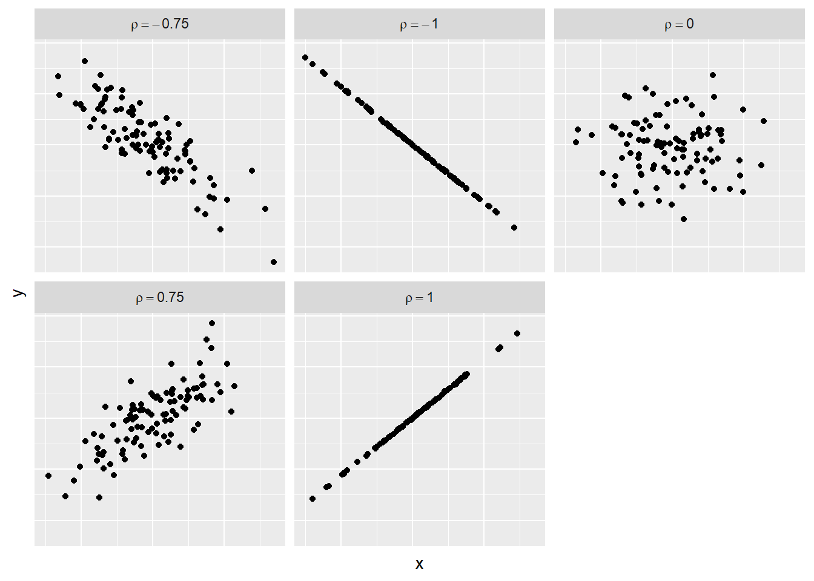
The correlation coefficient can be computed in R using the get_correlation function from the moderndive package. The function requires two numerical variables separated by ~ (or ‘tilde’), much like the formula syntax, such that the outcome variable score is put on the left-hand-side of the formula, and the explanatory variable bty_avg is placed on the right-hand-side of the formula:
Code
evals.scores |>
get_correlation(formula = score ~ bty_avg)# A tibble: 1 × 1
cor
<dbl>
1 0.187Here, we are given a correlation coefficient of 0.187 for the relationship between teaching (score) and beauty (bty_avg) scores. This suggests a rather weakly positive linear relationship between the two variables. There is some subjective interpretation surrounding correlation coefficients not very close to -1, 0, 1. The table below provides a rough guide as to the verbal interpretation of a correlation coefficient.
| Correlation coefficient | Verbal interpretation |
|---|---|
| 0.90 to 1.00 (-0.90 to -1.00) | Very strong positive (negative) correlation |
| 0.70 to 0.90 (-0.70 to -0.90) | Strong positive (negative) correlation |
| 0.50 to 0.70 (-0.50 to -0.70) | Moderate positive (negative) correlation |
| 0.30 to 0.50 (-0.30 to -0.50) | Weak positive (negative) correlation |
| 0.00 to 0.30 (0.00 to -0.30) | Very weak positive (negative) correlation |
The cor function can also be used to compute the correlation coefficient. For more details type ?cor into the R console.
The next step in our exploratory data analysis is to visualise the data using appropriate plotting techniques. Here, a scatterplot is appropriate since both score and bty_avg are numerical variables:
Code
ggplot(evals.scores, aes(x = bty_avg, y = score)) +
geom_point()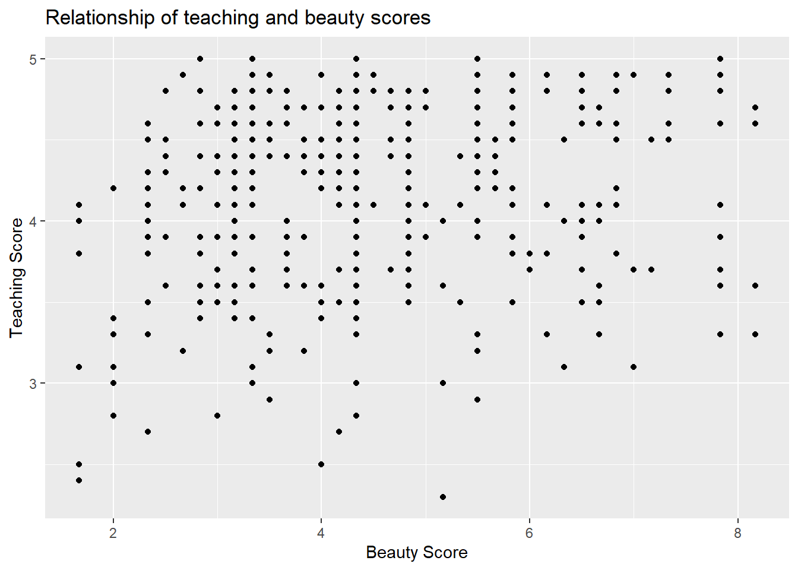
The outcome variable should always be plotted on the y-axis.
What can we observe from the scatterplot? Well, here it can be hard to see the weakly positive linear relationship suggested by the correlation coefficient (0.187), which is why our correlation coefficient is considered very weak in the verbal interpretation.
Additionally, as our numerical variables are averages of integers (or whole numbers), a lot of the values will be plotted on top of one another. Remember, from Session 1, that this is referred to as over-plotting, and can be alleviated by slightly nudging (jittering) the points in a random direction. For example, let’s look at the three points in the top-right of the scatterplot that have a beauty score slightly less than 8. Are there really only three values plotted there, or are there more that we cannot see due to over-plotting? Let’s find out by adding some jitter to the plot:
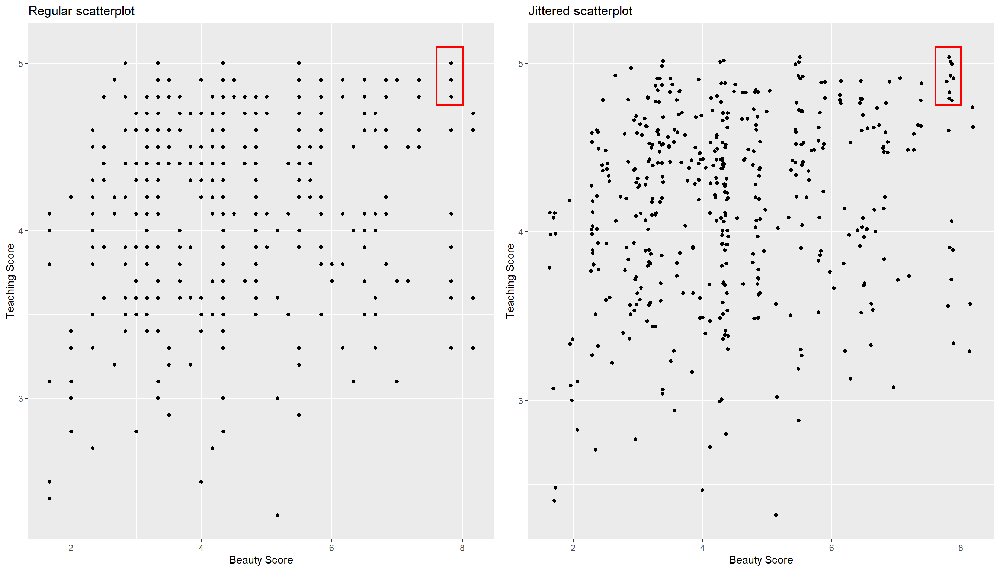
From the jittered scatterplot we can see that:
- There are actually more than just three points plotted in the top-right; and
- There are more instructors with a beauty score between 3 and 4.5 than originally appears due to over-plotting.
Jittering does not actually change the values within a data set, it is merely a tool for visualisation purposes. Hence, we shall continue on with plotting the original data.
3.3 Formal analysis
After completing an exploratory data analysis the next step is to perform a formal analysis on the data. This involves constructing an appropriate statistical model from the information gathered during the exploratory data analysis step. Here, we shall be fitting a simple linear regression model to the data on teaching and beauty scores, where our objective is to acquire the best fitting regression line. This is done by finding estimates of the intercept (\(\alpha\)) and slope (\(\beta\)) which give us the best-fitting line to the data. This can be done in R using the lm function. However, in this module we will explore the tidymodels R-package which contains a wide variety of modeling approaches. To fit a linear regression model we can use the linear_reg() function.
The linear_reg() function uses the lm engine as the default estimation approach. However, different estimations methods that wou will cover in future course are also available (see ?linear_reg() for a complete list of the available engines).
Once we declare the engine we want to use (in this case we will use the default settings), the model can be estimated by using the fit() function as follows:
Code
model <- linear_reg() |>
fit(score ~ bty_avg, data = evals.scores)
model$fit
Call:
stats::lm(formula = score ~ bty_avg, data = data)
Coefficients:
(Intercept) bty_avg
3.88034 0.06664 The fitted model (the lm object in this case) can be accessed by calling $fit to the model we built. This tells us that our best-fitting line to the data is:
\[\widehat{\mbox{score}} = \widehat{\alpha} + \widehat{\beta} x_i = 3.88034 + 0.06664 \cdot \mbox{bty\_avg},\] where
-
\(\widehat{\alpha} = 3.88034\) is the intercept coefficient and means that, for any instructor with a
bty_avg = 0, their average teachingscorewould be 3.8803. Note thatbty_avg = 0is not actually possible asbty_avgis an average of beauty scores ranging between 1 and 10. -
\(\widehat{\beta} = 0.06664\) is the slope coefficient associated with the exploratory variable
bty_avg, and summarises the relationship betweenscoreandbty_avg. That is, asbty_avgincreases, so doesscore, such that- For every 1 unit increase in
bty_avg, there is an associated increase of, on average, 0.06664 units ofscore.
- For every 1 unit increase in
We can ask for a model summary using the tidy function that will return the output in a data.frame format:
Code
tidy(model)# A tibble: 2 × 5
term estimate std.error statistic p.value
<chr> <dbl> <dbl> <dbl> <dbl>
1 (Intercept) 3.88 0.0761 51.0 1.56e-191
2 bty_avg 0.0666 0.0163 4.09 5.08e- 5Finally, we can superimpose our best-fitting line onto our scatterplot to see how it fits through the points using the geom_smooth function as follows:
Code
ggplot(evals.scores, aes(x = bty_avg, y = score)) +
geom_point() +
labs(x = "Beauty Score", y = "Teaching Score",
title = "Relationship of teaching and beauty scores") +
geom_smooth(method = "lm", se = FALSE)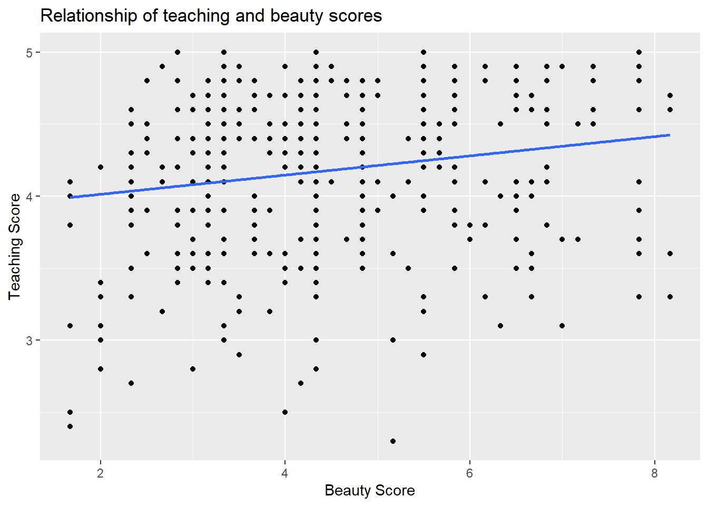
Now that we have fitted our simple linear regression model to the data, how do we use it to obtain information on individual data points? This can be done by looking at the fitted values. For example, let’s say we are interested in looking at the 21st instructor who has the following teaching and beauty scores:
score |
bty_avg |
|---|---|
| 4.9 | 7.33 |
What would the score be on our best-fitting line for this instructor with a bty_avg of 7.33? We simply plug the instructor’s bty_avg into our regression model:
\[\widehat{\mbox{score}} = 3.88034 + 0.06664 \cdot \mbox{bty\_avg} = 3.88034 + 0.06664 \cdot 7.33 = 4.369,\] The regression model gives our instructor a score of 4.369. However, we know the score of the instructor is 4.9 meaning that our model was out by 0.531. This is known as the residual (\(\epsilon\)) and can be thought of as the error or lack of fit of the regression line. In this case, the residual is given by:
\[ \widehat{\epsilon} = y - \widehat{y} = 4.9 - 4.369 = 0.531.\]This is essentially the distance between the fitted regression line and the observed (true) value. This can be seen on the following scatterplot:
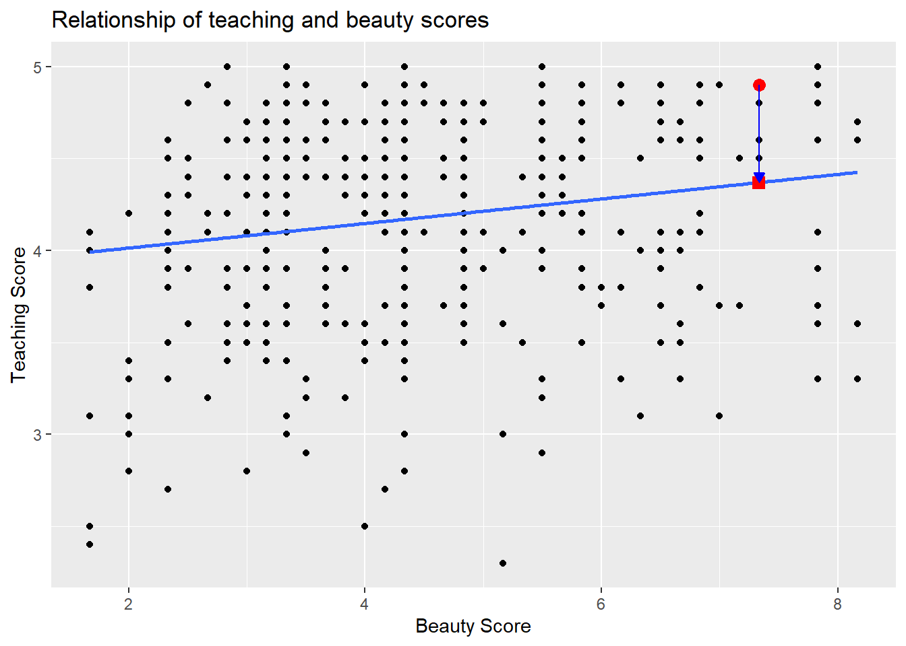
where
- the red circle is the observed (true)
score(\(y=4.9\)) of the instructor; - the red square is the fitted value (\(\widehat{y} = 4.369\)) from the regression line; and
- the blue arrow is the distance between the observed and fitted values, that is, the residual.
To obtain the fitted values and residuals for all instructors within the data set we can use the get_regression_points function:
Code
regression.points <- get_regression_points(model$fit)
regression.points# A tibble: 463 × 5
ID score bty_avg score_hat residual
<int> <dbl> <dbl> <dbl> <dbl>
1 1 4.7 5 4.21 0.486
2 2 4.1 5 4.21 -0.114
3 3 3.9 5 4.21 -0.314
4 4 4.8 5 4.21 0.586
5 5 4.6 3 4.08 0.52
6 6 4.3 3 4.08 0.22
7 7 2.8 3 4.08 -1.28
8 8 4.1 3.33 4.10 -0.002
9 9 3.4 3.33 4.10 -0.702
10 10 4.5 3.17 4.09 0.409
# ℹ 453 more rowsThe table provides us with information on the:
-
score: the observed value of the outcome variable \(y\); -
bty_avg: the values of the explanatory variable \(x\); -
score_hat: the values of the fitted values \(\widehat{y}\); and -
residual: the residuals \(y - \widehat{y}\).
Residuals and fitted values can also be obtained directly from the fitted model object:
Code
model_output <- data.frame(score_hat = model$fit$fitted.values,
residuals = model$fit$residuals)
model_output |> head() score_hat residuals
1 4.213523 0.4864769
2 4.213523 -0.1135231
3 4.213523 -0.3135231
4 4.213523 0.5864769
5 4.080249 0.5197509
6 4.080249 0.21975093.4 Assessing model fit
When we fit a simple linear regression model there are five main assumptions that we need to hold true in order for the model to be an appropriate fit to the data. These assumptions are:
- The deterministic part of the model captures all the non-random structure in the data, i.e. the residuals have mean zero.
- The scale of the variability of the residuals is constant at all values of the explanatory variables (homoscedasticity).
- The residuals are normally distributed.
- The residuals are independent.
- The values of the explanatory variables are recorded without error.
One way we can check our first assumption is to plot the residuals (residuals) against the explanatory variable (bty_avg). From this we should be able to check that the explanatory variable has a linear relationship with the outcome variable (score). We can plot the residuals against our explanatory variable using:
Code
ggplot(regression.points, aes(x = bty_avg, y = residual)) +
geom_point() +
labs(x = "Beauty Score", y = "Residual") +
geom_hline(yintercept = 0, col = "blue", linewidth = 1)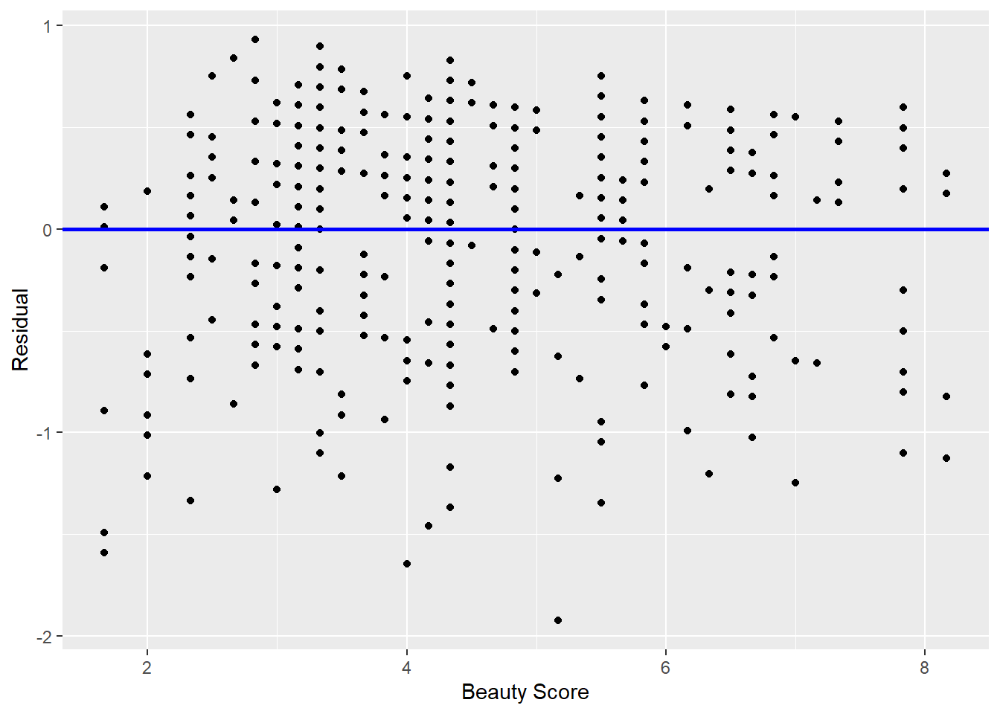
Ideally, for the first assumption to hold we should observe the following:
- There should be no systematic pattern, i.e. the residuals should appear randomly scattered.
- The residuals should have mean zero. That is, they should be evenly scattered above and below the zero line. This is because the regression model will overestimate some of the fitted values, but it will also underestimate some, and hence, on average, they should even out to have mean zero.
We can examine our first two assumptions by also plotting the residuals against the fitted values as follows:
Code
ggplot(regression.points, aes(x = score_hat, y = residual)) +
geom_point() +
labs(x = "Fitted values", y = "Residual") +
geom_hline(yintercept = 0, col = "blue", linewidth = 1)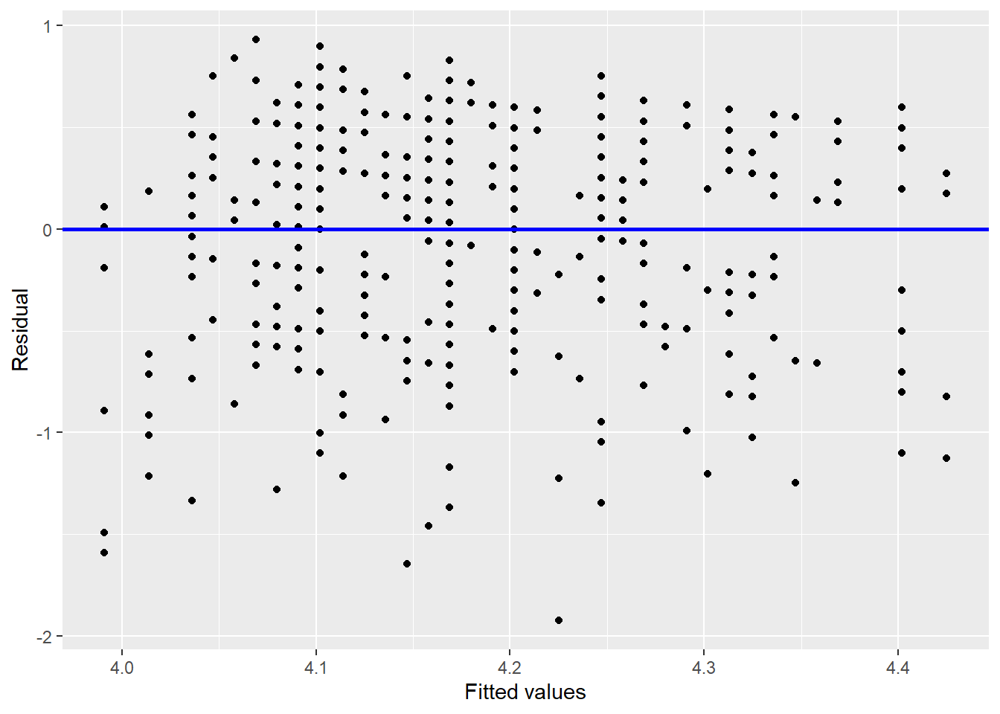
From the plot of the residuals against the fitted values we want to examine whether:
- The residuals have mean zero.
- If the residuals have constant variance across all levels of the fitted values. That is, the range (or spread) of the residuals should be similar across all levels of the fitted values and display no obvious changes in variability.
To assess our third assumption that the residuals are normally distributed we can simply plot a histogram of the residuals:
Code
ggplot(regression.points, aes(x = residual)) +
geom_histogram(binwidth = 0.25, color = "white") +
labs(x = "Residual")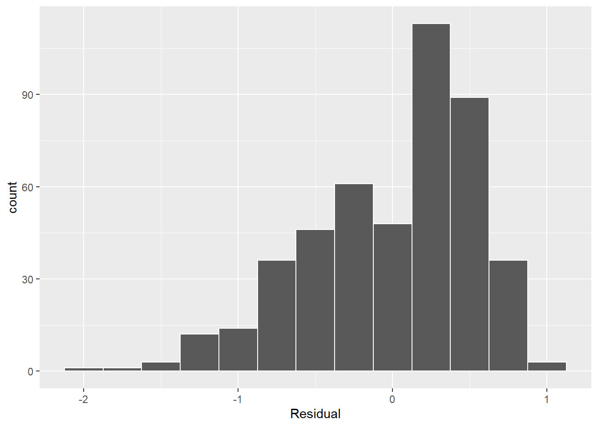
Ideally, for the assumption of normally distributed residuals, the histogram should be bell-shaped and centred at zero, i.e. the residuals have mean zero. However, in practice this will almost never be the case, and as such, like the plots of the residuals, there is some subjectivity in whether you believe the assumptions hold. For instance, here we can see that the histogram is slightly skewed to the left in that the distribution has a longer tail to the left. However, in my opinion, this is not of much concern as the histogram appears to be relatively symmetrical and bell-shaped, and as such the assumption of normally distributed random errors appears valid in this case.
Finally, assumptions 4. and 5. are often justified on the basis of the experimental context and are not formally examined.
4 Simple linear regression with one categorical explanatory variable
Here, we will fit a simple linear regression model were the explanatory variable is categorical. A categorical variable is a variable of a fixed number of possible values, assigning units to particular groups (or categories) based on qualitative properties.
We shall examine the gapminder data set from the gapminder library. This is a data set on life expectancy across various countries around the world. We will explore life expectancy and its potential differences:
- Between continents: Does life expectancy vary, on average, between the five continents of the world?; and
- Within continents: Does life expectancy vary, on average, within the five continents of the world?
Thus, we will be looking at:
- life expectancy as our numerical outcome variable \(y\); and
- the continent a country is within as our categorical variable \(x\).
4.1 Exploratory data analysis
Let’s examine a subset of the gapminder data set relating to the year 2007. That is, we use the filter function to choose only the observations pertaining to 2007, and then select the variables we are interested in:
The new data set can be examined using either the View or glimpse functions, i.e.
Code
glimpse(gapminder2007)Rows: 142
Columns: 3
$ country <fct> "Afghanistan", "Albania", "Algeria", "Angola", "Argentina", …
$ continent <fct> Asia, Europe, Africa, Africa, Americas, Oceania, Europe, Asi…
$ lifeExp <dbl> 43.828, 76.423, 72.301, 42.731, 75.320, 81.235, 79.829, 75.6…Here, we can see that both country and continent are factors (fct), which is how R stores categorical variables. Similarly to our previous exploratory data analysis, we can obtain summary statistics using the skim function. First, let’s take a look at the life expectancy (lifeExp) and continent variables:
| Name | select(gapminder2007, con… |
| Number of rows | 142 |
| Number of columns | 2 |
| _______________________ | |
| Column type frequency: | |
| factor | 1 |
| numeric | 1 |
| ________________________ | |
| Group variables | None |
Variable type: factor
| skim_variable | n_missing | complete_rate | ordered | n_unique | top_counts |
|---|---|---|---|---|---|
| continent | 0 | 1 | FALSE | 5 | Afr: 52, Asi: 33, Eur: 30, Ame: 25 |
Variable type: numeric
| skim_variable | n_missing | complete_rate | mean | sd | p0 | p25 | p50 | p75 | p100 | hist |
|---|---|---|---|---|---|---|---|---|---|---|
| lifeExp | 0 | 1 | 67.01 | 12.07 | 39.61 | 57.16 | 71.94 | 76.41 | 82.6 | ▂▃▃▆▇ |
The summary output for the numerical outcome variable lifeExp is the same as we have seen previously. However, for the categorical variable continent we obtain:
-
n_unique: the number of levels (or categories) of the variable, i.e. the number of continents. -
top_counts: the top counts from the top categories. -
ordered: whether the variable is ordinal or not. That is, whether or not the ordering of the categories matter.
We can summarise any differences in life expectancy by continent by taking a look at the median and mean life expectancies of each continent using the summarize functions as follows:
Code
# A tibble: 5 × 3
continent median mean
<fct> <dbl> <dbl>
1 Asia 72.4 70.7
2 Europe 78.6 77.6
3 Africa 52.9 54.8
4 Americas 72.9 73.6
5 Oceania 80.7 80.7Boxplots are often used when examining the distribution of a numerical outcome variable across different levels of a categorical variable:
Code
ggplot(gapminder2007, aes(x = continent, y = lifeExp)) +
geom_boxplot() +
labs(x = "Continent", y = "Life expectancy (years)",
title = "Life expectancy by continent")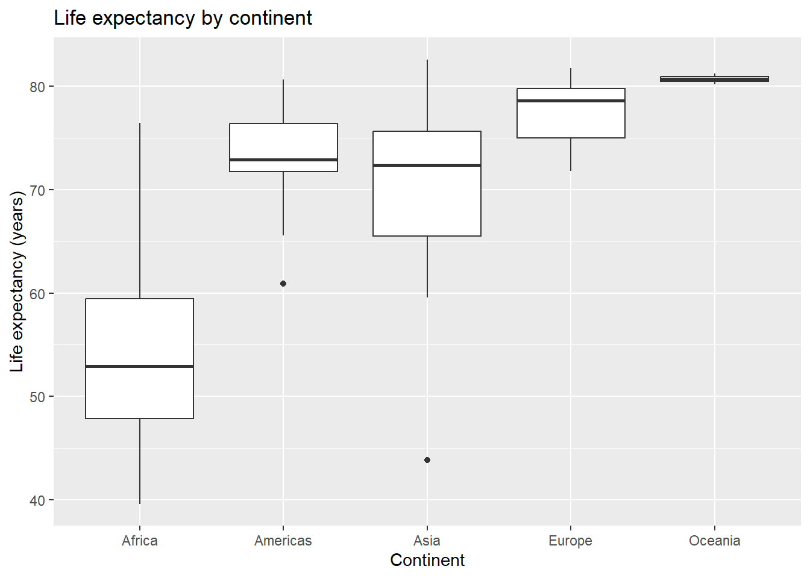
Here, we can see that the middle 50% of the life expectancy distribution of Africa is much smaller than, and does not overlap with, the middle 50% of the remaining four continents, while the country with the highest life expectancy in Africa is less than all countries in Oceania. Speaking of Oceania, there is almost no variability (or spread) in life expectancy in this continent, however that may well be because it consists of only two countries (Australia and New Zealand). There is more variability in life expectancy in the continents of Africa and Asia.
4.2 Formal analysis
When examining the relationship between a numerical outcome variable \(y\) and a categorical explanatory variable \(x\), we are not just looking to find the best-fitting line to the data as before, but are examining relative differences to a baseline category. For example, the table below displays the mean life expectancy of each continent, as well as the differences between the means of each continent and Africa. Now, in comparison with Africa we can see that the mean life expectancy of the other continents is around 18-26 years greater than that of Africa.
| continent | mean | mean vs Africa |
|---|---|---|
| Africa | 54.81 | 0.00 |
| Americas | 73.61 | 18.80 |
| Asia | 70.73 | 15.92 |
| Europe | 77.65 | 22.84 |
| Oceania | 80.72 | 25.91 |
Now let us fit our regression model to the data, where lifeExp is our outcome variable \(y\) and continent is our categorical explanatory variable \(x\):
Code
lifeExp.model <- linear_reg() |>
fit(lifeExp ~ continent, data = gapminder2007)# A tibble: 5 × 5
term estimate std.error statistic p.value
<chr> <dbl> <dbl> <dbl> <dbl>
1 (Intercept) 54.8 1.03 53.4 1.23e-93
2 continentAmericas 18.8 1.80 10.4 3.74e-19
3 continentAsia 15.9 1.65 9.67 3.41e-17
4 continentEurope 22.8 1.70 13.5 7.10e-27
5 continentOceania 25.9 5.33 4.86 3.12e- 6For now we will ignore the last three columns of the regression table and only focus on the estimate column.
We obtain five estimates: the intercept term and four others relating to the continents (continentAmericas, continentAsia, continentEurope and continentOceania), such that our regression equation is given as:
\[\widehat{\mbox{life exp}} = \widehat{\alpha} + \widehat{\beta}_{\mbox{Amer}} \cdot \mathbb{I}_{\mbox{Amer}}(x) + \widehat{\beta}_{\mbox{Asia}} \cdot \mathbb{I}_{\mbox{Asia}}(x) + \widehat{\beta}_{\mbox{Euro}} \cdot \mathbb{I}_{\mbox{Euro}}(x) + \widehat{\beta}_{\mbox{Ocean}} \cdot \mathbb{I}_{\mbox{Ocean}}(x),\] where
the intercept \(\widehat{\alpha}\) is the mean life expectancy for our baseline category Africa;
\(\widehat{\beta}_{\mbox{continent}}\) is the difference in the mean life expectancy of a given continent relative to the baseline category Africa; and
-
\(\mathbb{I}_{\mbox{continent}}(x)\) is an indicator function such that
\[\mathbb{I}_{\mbox{continent}}(x)=\left\{ \begin{array}{ll} 1 ~~~ \mbox{if country} ~ x ~ \mbox{is in the continent},\\ 0 ~~~ \mbox{Otherwise}.\\ \end{array} \right.\]
Essentially, the estimates for each continent are known as offsets relative to the baseline category (Africa in this case). For example, the mean life expectancy for Africa is simply equal to the intercept term \(\widehat{\alpha} = 54.8\). However, the mean life expectancy for Asia is:
\[\widehat{\alpha} + \widehat{\beta}_{\mbox{Asia}} \cdot \mathbb{I}_{\mbox{Asia}}(x) = 54.8 + 15.9 \cdot 1 = 70.7 \]
If we just look at a \(\widehat{\beta}_{\mbox{continent}}\) on their own, then we would interpret these coefficients in relative terms with respect to the baseline category. E.g., looking at \(\widehat{\beta}_{\mbox{Asia}}=15.9\) , we would say that the life expectancy in Asia is on average 15.9 years greater than in Africa.
4.3 Assessing model fit
What do the fitted values \(\widehat{y}\) and the residuals \(y - \widehat{y}\) correspond to when we are dealing with a categorical explanatory variable? Let’s explore the gapminder2007 data set in order to understand how they work.
# A tibble: 142 × 3
country continent lifeExp
<fct> <fct> <dbl>
1 Afghanistan Asia 43.8
2 Albania Europe 76.4
3 Algeria Africa 72.3
4 Angola Africa 42.7
5 Argentina Americas 75.3
6 Australia Oceania 81.2
7 Austria Europe 79.8
8 Bahrain Asia 75.6
9 Bangladesh Asia 64.1
10 Belgium Europe 79.4
# ℹ 132 more rowsHere, we see the life expectancy of each country and the continent they are from. For example, let’s remember the life expectancies of Afghanistan (43.8) and Bahrain (75.6). Now, we can obtain the fitted values and residuals in the same way we did previously:
Code
regression_points <- get_regression_points(lifeExp.model$fit)# A tibble: 142 × 5
ID lifeExp continent lifeExp_hat residual
<int> <dbl> <fct> <dbl> <dbl>
1 1 43.8 Asia 70.7 -26.9
2 2 76.4 Europe 77.6 -1.23
3 3 72.3 Africa 54.8 17.5
4 4 42.7 Africa 54.8 -12.1
5 5 75.3 Americas 73.6 1.71
6 6 81.2 Oceania 80.7 0.516
7 7 79.8 Europe 77.6 2.18
8 8 75.6 Asia 70.7 4.91
9 9 64.1 Asia 70.7 -6.67
10 10 79.4 Europe 77.6 1.79
# ℹ 132 more rowsThe first row of the regression table corresponds to the observed life expectancy (lifeExp), fitted value (lifeExp_hat) and the residual error (residual) for Afghanistan. Here, we see that the fitted value (lifeExp_hat = 70.7) is much greater than the life expectancy of Afghanistan (lifeExp = 43.8) with a residual = -26.9. Now, for Bahrain (ID = 8) we also have the same fitted value (lifeExp_hat = 70.7). This is because the fitted values for each country correspond to the mean life expectancy for that continent. Hence, all countries in Africa have the fitted value lifeExp_hat = 70.7, while all countries in Europe have the fitted value lifeExp_hat = 77.6. The residual error in this case is then how much a country deviates from the mean life expectancy of its respective continent.
For assessing the assumptions surrounding the residuals for a categorical explanatory variable, we can plot the residuals for each continent:
Code
ggplot(regression_points, aes(x = continent, y = residual)) +
geom_jitter(width = 0.1) +
labs(x = "Continent", y = "Residual") +
geom_hline(yintercept = 0, col = "blue")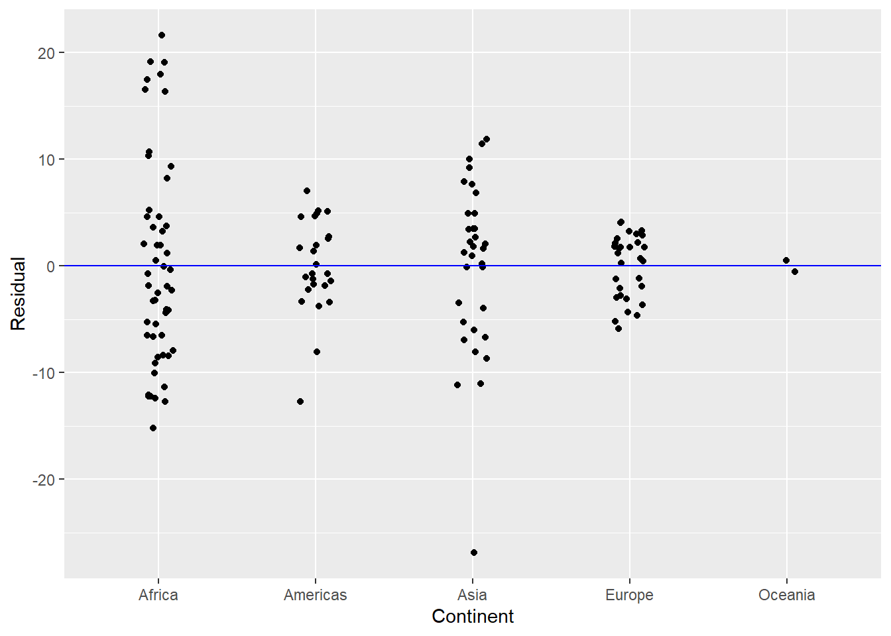
We have jittered the points for each continent in order to see the residuals for each country more clearly.
Here, we see that there is an even spread of the residuals above and below the zero line for each continent, and hence our assumption that the residuals have mean zero appears valid. There is an outlier observed for Asia with a large negative residual (relating to Afghanistan).
To check that the residual errors are normally distributed, we plot a histogram of them:
Code
ggplot(regression_points, aes(x = residual)) +
geom_histogram(binwidth = 5, color = "white") +
labs(x = "Residual")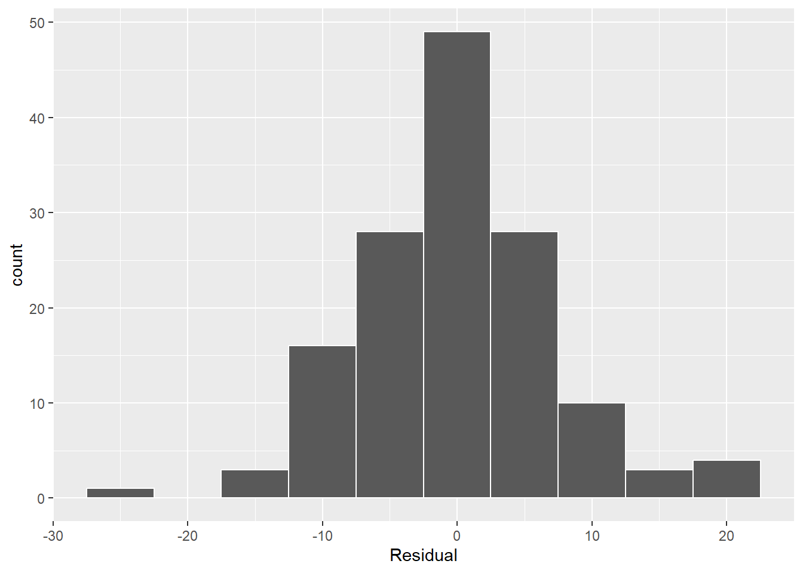
5 Multiple regression with two numerical explanatory variables
In the last sections we introduced regression modelling where we modelled the relationship between an outcome variable \(y\) and a single explanatory variable \(x\), which was either a numerical or categorical variable. Here, we shall now examine fitting regression models with more than one explanatory variable. This is known as multiple regression.
When fitting regression models with multiple explanatory variables, the interpretation of an explanatory variable is made in association with the other variables. For example, if we wanted to model income then we may consider an individuals level of education, and perhaps the wealth of their parents. Then, when interpreting the effect an individuals level of education has on their income, we would also be considering the effect of the wealth of their parents simultaneously, as these two variables are likely to be related.
Additional information and examples can be found in Chapter 7 of An Introduction to Statistical and Data Science via R.
We shall examine a data set within the ISLR package, which is an accompanying R package related to the textbook An Introduction to Statistical Learning with Applications in R. We will take a look at the Credit data set, which consists of predictions made on the credit card balance of 400 individuals, were the predictions are based on information relating to income, credit limit and the level of education of an individual.
This is a simulated data set and is not based on credit card balances of actual individuals.
The regression model we will be considering contains the following variables:
- the numerical outcome variable \(y\), the credit card balance of an individual; and
- two explanatory variables \(x_1\) and \(x_2\), which are an individuals credit limit and income (in thousands of dollars), respectively.
5.1 Exploratory data analysis
ke a look at summary statistics relating to our newly created data set using the skim function:
Code
Cred |>
skim()| Name | Cred |
| Number of rows | 400 |
| Number of columns | 3 |
| _______________________ | |
| Column type frequency: | |
| numeric | 3 |
| ________________________ | |
| Group variables | None |
Variable type: numeric
| skim_variable | n_missing | complete_rate | mean | sd | p0 | p25 | p50 | p75 | p100 | hist |
|---|---|---|---|---|---|---|---|---|---|---|
| Balance | 0 | 1 | 520.02 | 459.76 | 0.00 | 68.75 | 459.50 | 863.00 | 1999.00 | ▇▅▃▂▁ |
| Limit | 0 | 1 | 4735.60 | 2308.20 | 855.00 | 3088.00 | 4622.50 | 5872.75 | 13913.00 | ▆▇▃▁▁ |
| Income | 0 | 1 | 45.22 | 35.24 | 10.35 | 21.01 | 33.12 | 57.47 | 186.63 | ▇▂▁▁▁ |
Now that we are looking at the relationship between an outcome variable and multiple explanatory variables, we need to examine the correlation between each of them. We can examine the correlation between Balance, Limit and Income by creating a table of correlations as follows:
Code
Cred |>
cor() Balance Limit Income
Balance 1.0000000 0.8616973 0.4636565
Limit 0.8616973 1.0000000 0.7920883
Income 0.4636565 0.7920883 1.0000000From our correlation table we can see that the correlation between our two explanatory variables is 0.792, which is a strong positive linear relationship. Hence, we say there is a high degree of collinearity between our explanatory variables.
Collinearity (or multicollinearity) occurs when an explanatory variable within a multiple regression model can be linearly predicted from the other explanatory variables with a high level of accuracy. For example, in this case, since Limit and Income are highly correlated, we could take a good guess as to an individual’s Income based on their Limit. That is, having one or more highly correlated explanatory variables within a multiple regression model essentially provides us with redundant information. Normally, we would remove one of the highly correlated explanatory variables, however, for the purpose of this example we shall ignore the potential issue of collinearity and carry on. You may want to use the pairs function or the ggpairs function from the GGally package to look at potential relationships between all of the variables within a data set.
When we have several potential explanatory variables a model selection technique can help to identify which explanatory variables are significant predictors (in addition to the others) and which variables should be removed from the model. One procedure that can be used is stepwise regression, which implements an automatic procedure for choosing which explanatory variables should be included within the final model. A common stepwise procedure compares models using the model fit criterion Akaike Information Criterion (AIC) and can be implemented in R using the stepAIC function from the MASS library. This procedure allows for forward selection and backward selection (or both), where forward selection starts with the simplest model before iteratively including one explanatory variable at a time until the AIC reaches a minimum. The backward selection approach starts with the most complex model before removing one explanatory variable at a time until the minimium AIC is achieved. We will cover more of this in the next session.
Let’s now produce scatterplots of the relationship between the outcome variable and the explanatory variables. First, we shall look at the scatterplot of Balance against Limit:
Code
ggplot(Cred, aes(x = Limit, y = Balance)) +
geom_point() +
labs(x = "Credit limit (in $)", y = "Credit card balance (in $)",
title = "Relationship between balance and credit limit") +
geom_smooth(method = "lm", se = FALSE)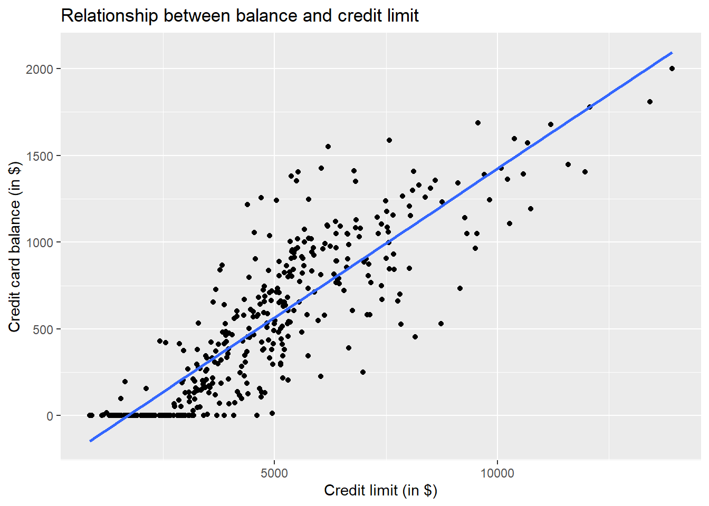
Now, let’s look at a scatterplot of Balance and Income:
Code
ggplot(Cred, aes(x = Income, y = Balance)) +
geom_point() +
labs(x = "Income (in $1000)", y = "Credit card balance (in $)",
title = "Relationship between balance and income") +
geom_smooth(method = "lm", se = FALSE)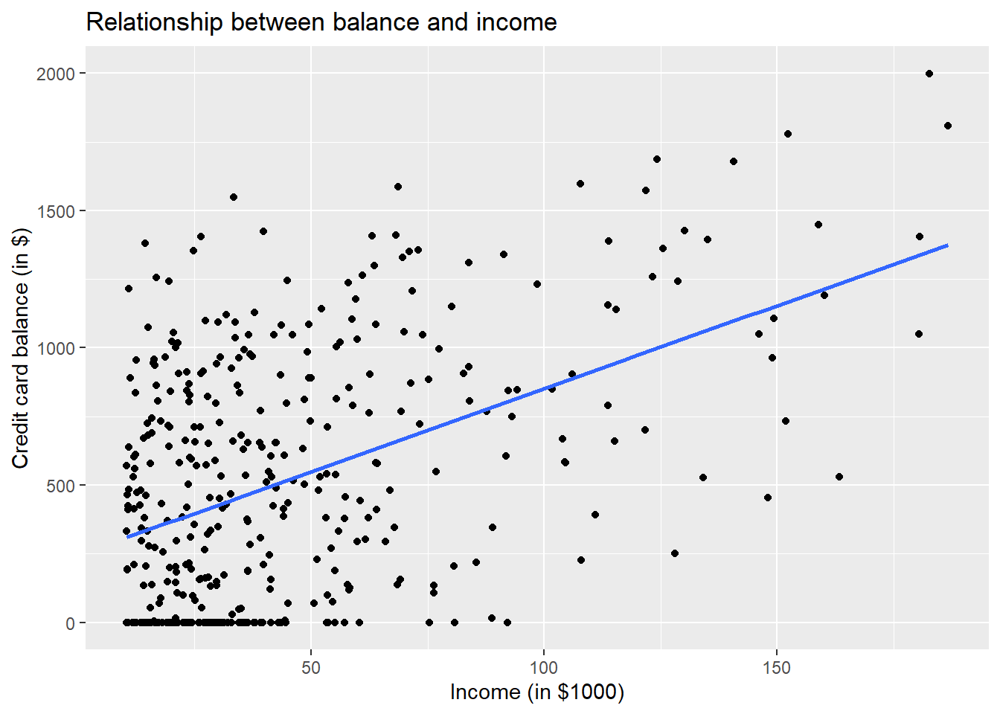
The two scatterplots above focus on the relationship between the outcome variable Balance and each of the explanatory variables independently. In order to get an idea of the relationship between all three variables we can use the plot_ly function within the plotly library to plot a 3-dimensional scatterplot as follows:
When we fitting our regression model with just a single covariate we looked at the best-fitting line. However, now that we have more than one explanatory variable, we are looking at the best-fitting plane, which is a 3-dimensional generalisation of the best-fitting line.
5.2 Formal analysis
The multiple regression model we will be fitting to the credit balance data is given as:
\[y_i = \alpha + \beta_1 x_{1i} + \beta_2 x_{2i} + \epsilon_i, ~~~~ \epsilon \sim N(0, \sigma^2),\]
where
- \(y_i\) is the balance of the \(i^{th}\) individual;
- \(\alpha\) is the intercept and positions the best-fitting plane in 3D space;
- \(\beta_1\) is the coefficient for the first explanatory variable \(x_1\);
- \(\beta_2\) is the coefficient for the second explanatory variable \(x_2\); and
- \(\epsilon_i\) is the \(i^{th}\) random error component.
Similarly to a simple linear regression, we use the lm function to fit the regression model and the tidy function to view our parameter estimates:
Code
Balance.model <- linear_reg() |> fit(Balance ~ Limit + Income, data = Cred)
tidy(Balance.model$fit)# A tibble: 3 × 5
term estimate std.error statistic p.value
<chr> <dbl> <dbl> <dbl> <dbl>
1 (Intercept) -385. 19.5 -19.8 3.88e- 61
2 Limit 0.264 0.00588 45.0 7.72e-158
3 Income -7.66 0.385 -19.9 1.26e- 61To include multiple explanatory variables within a regression model we simply use the + sign, that is Balance ~ Limit + Income.
How do we interpret our model estimates defining the regression plane? They can be interpreted as follows:
- The intercept represents the credit card balance (
Balance) of an individual who has $0 for both credit limit (Limit) and income (Income). However, the interpretation of the intercept in this case is somewhat limited as there are no individuals with $0 credit limit and income in the data set, with the smallest credit card balance being $0. - The coefficient for credit limit (
Limit) tells us that, taking all other variables in the model into account, that there is an associated increase, on average, in credit card balance of $0.26. - Similarly, the coefficient for income (
Income) tells us that, taking all other variables in the model into account, that there is an associated decrease, on average, in credit card balance of $7.66.
What do you notice that is strange about our coefficient estimates given our exploratory data analysis? Well, from our scatterplots of credit card balance against both credit limit and income, we seen that there appeared to be a positive linear relationship. Then, why do we then get a negative coefficient for income (-7.66)? This is due to a phenomenon known as Simpson’s Paradox. This occurs when there are trends within different categories (or groups) of data, but that these trends disappear when the categories are grouped as a whole. For more details see Section 7.3.2 of An Introduction to Statistical and Data Sciences in R.
5.3 Assessing model fit for multiple regression
Now we need to assess our model assumptions. Similarly to simple regression, our model assumptions are:
- The deterministic part of the model captures all the non-random structure in the data, i.e. the residuals have mean zero.
- The scale of the variability of the residuals is constant at all values of the explanatory variables.
- The residuals are normally distributed.
- The residuals are independent.
- The values of the explanatory variables are recorded without error.
First, we need to obtain the fitted values and residuals from our regression model:
Code
regression.points <- get_regression_points(Balance.model$fit)Recall that get_regression_points provides us with values of the:
- outcome variable \(y\) (
Balance); - explanatory variables \(x_1\) (
Limit) and \(x_2\) (Income); - fitted values \(\widehat{y}\); and
- the residual error (\(y - \widehat{y}\)).
We can assess our first two model assumptions by producing scatterplots of our residuals against each of our explanatory variables. First, let’s begin with the scatterplot of the residuals against credit limit:
Code
ggplot(regression.points, aes(x = Limit, y = residual)) +
geom_point() +
labs(x = "Credit limit (in $)", y = "Residual", title = "Residuals vs credit limit") +
geom_hline(yintercept = 0, col = "blue", linewidth = 1)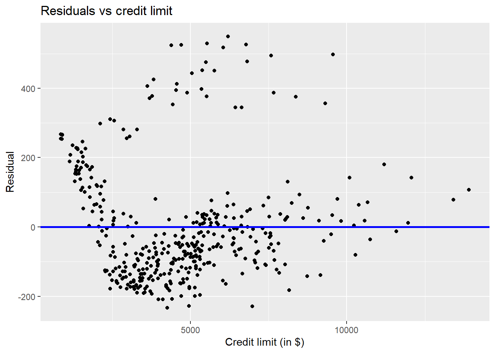
Now, let’s plot a scatterplot of the residuals against income:
Code
ggplot(regression.points, aes(x = Income, y = residual)) +
geom_point() +
labs(x = "Income (in $1000)", y = "Residual", title = "Residuals vs income") +
geom_hline(yintercept = 0, col = "blue", linewidth = 1)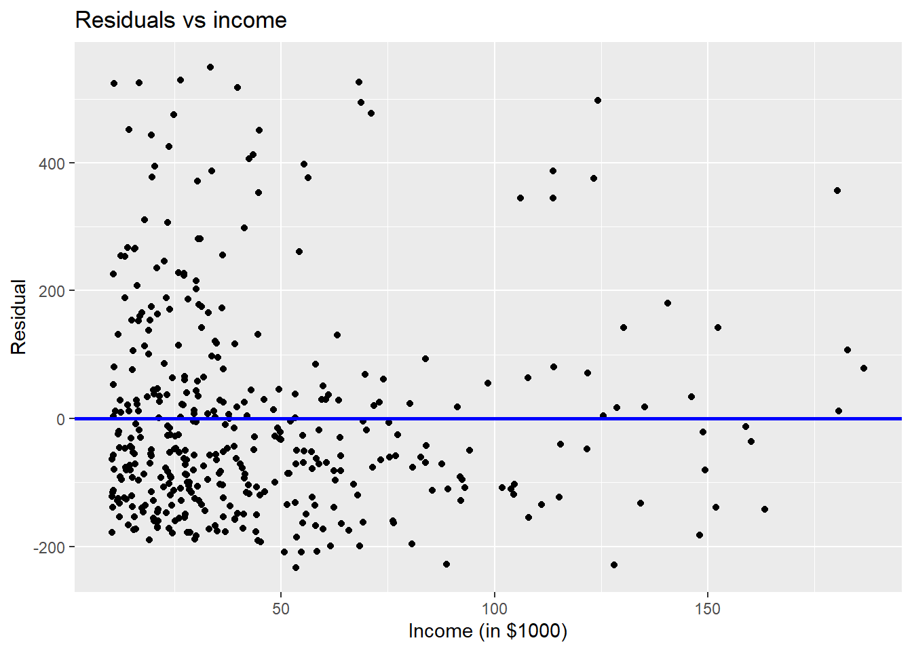
We can also call the function autoplot form the ggfortify library to produce the standard diagnostic plots for a fitted linear regression model: